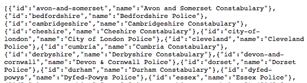

UK Police Force Information and JSON Data
You can view all of the UK police forces and relevant information for these forces. The forces can be retrieved here: https://data.police.uk/api/forces. The force data should appear in JSON format:
In JSON format, within each pair of curly crackets is an object, and objects have one or more pieces of data with a key and a value. In this case, each object has two keys: "id" and "name", and for the first force id, the value is "avon-and-somerset". We will be retrieving JSON data from the UK API with our JavaScript code.
We can also view force information for a specific force, by going to the URL https://data.police.uk/api/forces/leicestershire, where "leicestershire" is the force we want to view. We can also view information for the senior officers of a force, https://data.police.uk/api/forces/leicestershire/people, where adding "/people" to the end of the link will show information for the Leicestershire senior police officers. Go to these links to view the JSON data for Leicestershire police force and for its senior police officers. For each object, look at what keys and values are there. Replacing "leicestershire" with the id of another police force will show JSON data for the appropriate police force.
Now that we have an idea about the kind of data we will be working with, we will move on to performing GET requests and working with JSON data for retrieving UK crime data.